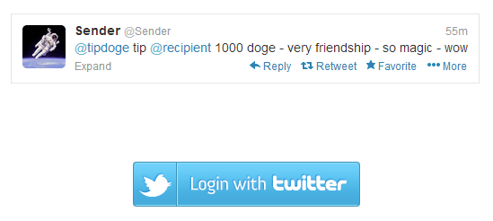

Dogecoin is a cryptocurrency, basically digital monies. As described by the Guardian, it is "based on a combination of bitcoin, the popular digital money, and Doge, the internet meme that superimposes broken English written in Comic Sans onto pictures of Shiba Inu dogs." While the doge meme is silly, Dogecoin is built on the same technologies as Bitcoin and Litecoin and is just as legitimate.
We've been following cryptocurrencies for a while but Doge is the one that made me jump in. Why? Community and accessibility.
The community is very fun and positive. Not very Wall Street. Anyone is welcome, even new shibes like you (the meme dog is a Shiba Inu). There are also many community efforts (such as the recent $30k worth of doge donation to the Jamaican olympic bobsled team) at foundation.dogecoin.com. To join in, check out reddit.com/r/dogecoin.
As far as accessibility, it is easy to acquire doge via tips, faucets, mining, and exchanges. Mining (#link_to_mining) just requires free software and normal computers, so it is still possible for average shibes like you and me! While 1 Bitcoin is worth ~$800 usd, it is impossible / extremely unprofitable to mine without specialized hardware that is designed specifically for mining Bitcoin. There is also no hardware designed specifically to mine Doge to compete against! Payouts for cryptocurrencies are also reduced over time as part of their design, so it is hard to mine a currency that has been out for years. Doge was released in December 2013 so it is still young.
An alternate guide for a local wallet and faucets can be found at howtodoge.com. We did not realize we had picked a such similar domain and are very sorry shibes.
Anyways, your wallet is where you keep all your dogecoins. In our guide, you will use a local wallet. This means all the coins are stored in a file on your computer, so if your computer spontaneously explodes, you will lose your coins! However you can and should make backups. An alternative is an online wallet service, but this requires trust because they could turn out to be bad shibes and run off with your coins! Note: you can have multiple wallets like having multiple bank accounts. For example, store some in an online wallet for convenience and the rest in a secure and backed up local wallet.
First go to the official site and grab the appropriate wallet for your operating system. "Browser" is for an online wallet, which we will not cover at this time.

When you first run the program it takes a while to sync. This is because all transactions are saved in something called a block chain. Your wallet must basically download the block chain until it catches up to the latest transactions so give it some time.
Now you have a wallet and can start receiving coins! When you select "much receive" you will have a single address. To receive doge, just have people send to this address. Since it is difficult to type, you can just copy paste either by right clicking the address to copy or by selecting the address then clicking "copy address" at the bottom.

If you want to track your sources of coins better, you can create new addresses and give them labels. For example, I can create a new address to receive doge specifically from this guide, which will distinguish them in the history. All these addresses go to the same wallet though.
It is safe to give this receive address to people you don't know, it is a one way street! Bad shibes cannot pull doge out from it.
Ready to get your first doge? There are sites out there known as faucets which give you free doge. Faucets are great for poor and new shibes in need of some starter doge or don't have an adequate computer to mine them. These "water bowls" are filled by rich and generous shibes, so remember to give back when you are an established shibe! If they run out, they are out until some shibe refills them.
To receive your free dogecoin payout, all you have to do is enter your receive address to receive the payment. Much generous!
Note, payouts won't immediately show up. They are added to the block chain and then you must sync up to that point.
Below are lists of faucets maintained by other shibes (not us).
Tipping is possible on Reddit, Twitter, and other social media such as 4chan. Tipping brings much joy and is an essential part of the community. It is also important because it introduces people to the wonders of dogecoin and keeps doge in circulation.
We show you tipping with Twitter and Reddit below. With both tipping bots you must maintain a balance with them in order to actually send doge!
Register with the twitter dogetipbot by visiting the link and logging in with your twitter credentials.
After authenticating your account, you'll receive a series of instructions for depositing dogecoin to begin tipping.

+register with the dogetipbot by sending the linked message. (note: you should receive your confirmation almost instantly but during high volume periods of traffic, it may take longer)

Your registration confirmation will include your deposit address and balance. If for any reason you forget your deposit address or tipbot balance, just message +info to dogetipbot.

Some other useful dogetipbot commands are:
Using the account you created for your pool (in our case, fast-pool), we're going to set up a worker to begin mining. Within your pool dashboard, there should be an option to view your workers.

On your worker dashboard, there will be an option to create a new worker.

Give the worker a username and password (this will be used for your mining configuration file)

Once you've added your new worker, you should successfully see it added to your list. Many congrats!